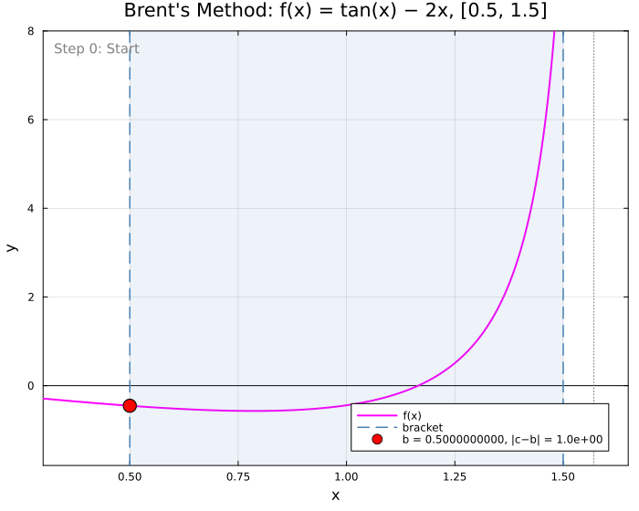

Brent’s Method
Source inspiration: (Mathew 2000-2019).
Description
Brent’s method, developed by Richard Brent in 1971 based on earlier work by van Wijngaarden, Zonneveld, and Dijkstra (1963), Wilkinson (1967), Dekker (1969), and others, is a hybrid root-finding algorithm that guarantees convergence while achieving fast (superlinear) convergence whenever possible. It requires only that the function \(f\) be continuous on \([a, b]\) with \(f(a)\) and \(f(b)\) of opposite sign — no derivatives are needed.
The method maintains a bracket that always contains a root, and intelligently selects among three sub-methods at each step:
- Inverse quadratic interpolation — fits \(x\) as a quadratic function of \(y\) through the three points \((a, f(a))\), \((b, f(b))\), \((c, f(c))\) (a sideways parabola) and evaluates it at \(y = 0\). Converges superlinearly near a simple root.
- Secant method (regula falsi) — uses the chord through \((a, f(a))\) and \((b, f(b))\) as a fallback when inverse quadratic interpolation cannot be used (only two distinct points, \(a = c\)).
- Bisection — used as a safeguard whenever interpolation is not making enough progress; guarantees the bracket shrinks by at least half.
State Variables
At a typical step, Brent’s method tracks three points — \(a\), \(b\), \(c\) — satisfying:
\[f(b) \cdot f(c) \leq 0, \qquad |f(b)| \leq |f(c)|\]
so that \(b\) is the current best approximation to the root and the root always lies between \(b\) and \(c\). The third point \(a\) is the previous value of \(b\) (or coincides with \(c\)) and supplies the extra point for interpolation.
Inverse Quadratic Interpolation Formula
Given function values \(y_a = f(a)\), \(y_b = f(b)\), \(y_c = f(c)\), the next estimate is:
\[s = \frac{y_b \, y_c}{(y_a - y_b)(y_a - y_c)}\,a + \frac{y_a \, y_c}{(y_b - y_a)(y_b - y_c)}\,b + \frac{y_a \, y_b}{(y_c - y_a)(y_c - y_b)}\,c\]
This step is accepted only if \(s\) falls inside the current bracket and the method is making adequate progress; otherwise a bisection step is taken instead.
Secant Method Formula
When only two distinct points are available (\(a = c\)), the method uses the secant step instead of IQI:
\[s = b - f(b) \cdot \frac{b - a}{f(b) - f(a)}\]
Convergence
- Guaranteed: Brent’s method always keeps the root bracketed and converges. Its safeguards take a bisection instead of an interpolation step that would not stay within about three quarters of the way from \(b\) to \(c\), or that is not smaller than half the step before last. This does not make it at least as fast as bisection: for the very flat \(f(x) = x^9\) on \([-1, 2]\) it needs 96 function evaluations to shrink the bracket below \(10^{-10}\), where bisection needs 37.
- Fast case: When IQI applies consistently near a simple root, convergence is superlinear with order approximately 1.839 (the positive real root of \(t^3 = t^2 + t + 1\)). Case 1 shows the superlinear phase: from step 4 to step 7 each step multiplies the error in \(b\) by a smaller factor (0.030, 0.017, then \(5.0\times10^{-4}\)), though, with secant and IQI steps mixed, the observed order does not settle at 1.839.
- Robustness: Unlike the secant method or IQI alone, Brent’s method cannot fail to converge as long as the initial bracket is valid and \(f\) is continuous.
Comparison with Constituent Methods
| Method | Guaranteed? | Convergence order | Derivatives needed? |
|---|---|---|---|
| Bisection | Yes | 1 (linear) | No |
| Regula Falsi | Yes (for sign change) | 1 (linear; slow for flat \(f\)) | No |
| Secant | No | \(\approx 1.618\) (superlinear) | No |
| Inverse Quadratic | No | \(\approx 1.839\) | No |
| Brent’s Method | Yes | Up to \(\approx 1.839\) | No |
Brent’s method combines Bisection with the Secant Method and inverse quadratic interpolation. False Position also keeps a bracket, but with one endpoint fixed it converges only linearly (Case 2); Muller’s Method fits \(y\) as a quadratic in \(x\) rather than \(x\) as a quadratic in \(y\); and Newton-Raphson converges quadratically at a simple root but needs \(f'\) and keeps no bracket.
Animations
Each animation below shows the bracket-narrowing diagram for Brent’s method. The shaded region marks the current bracket between \(b\) and \(c\), known to contain a root. The red dot tracks \(b\), the best current approximation (the endpoint with the smallest \(|f|\) value). The step annotation indicates which sub-method — Bisection, Secant, or IQI — was selected at that iteration; “Min step” marks a step shorter than the tolerance (\(\approx 5\times10^{-11}\)), which the method replaces by a step of that minimum length. The legend gives \(b\) to 10 decimal places and the bracket width \(|c - b|\), so the last steps can still be followed after the bracket has become narrower than one pixel (from step 6 in Case 1 and step 8 in Case 2).
Julia source scripts that generated these animations are linked under each case.
Case 1 — Polynomial root, \(f(x) = 4x^3 - 16x^2 + 17x - 4\), \([a_0, b_0] = [0, 1]\)
Behavior: \(f(0) = -4 < 0\) and \(f(1) = 1 > 0\), so the IVT guarantees a root in \([0, 1]\). The true root is \(x^* \approx 0.3285\). Brent’s method takes 8 steps: secant, bisection, IQI, secant, IQI, secant, secant, IQI. At step 3 the IQI point \(0.2276\) has the larger \(|f|\), so it becomes the other end of the bracket and \(b\) stays at \(0.4\). After the bisection at step 2 every step is an interpolation step, and at steps 5–8 the error in \(b\) falls to \(3.2\times10^{-4}\), \(5.5\times10^{-6}\), \(2.7\times10^{-9}\) and \(4.0\times10^{-19}\): at step 8 \(b\) is the double-precision number nearest the root, and \(f(b)\) evaluates to exactly 0. The run stops there because \(f(b) = 0\), with the bracket still \(3.2\times10^{-4}\) wide. To get within \(10^{-10}\) of the root on \([0, 1]\), bisection needs 32 iterations and regula falsi 24. The window also shows the cubic’s other two roots, \(x \approx 1.2647\) in \([1, 2]\) and \(x \approx 2.4068\) in \([2, 3]\); Mathews’ example also finds these with Brent’s method, but only the run on \([0, 1]\) is animated here.

Case 2 — Transcendental equation, \(f(x) = \tan(x) - 2x\), \([a_0, b_0] = [0.5, 1.5]\)
Behavior: The root of \(\tan(x) = 2x\) in \([0.5, 1.5]\) (its smallest positive root) lies at \(x^* \approx 1.1656\). \(f(0.5) = \tan(0.5) - 1 \approx -0.454 < 0\) and \(f(1.5) = \tan(1.5) - 3 \approx 11.1 > 0\). Brent’s method takes 10 steps: secant, two bisections, then secant, IQI, secant, secant, IQI, secant and a final minimum step, which leaves the root inside a bracket of width \(5\times10^{-11}\) with \(b \approx 1.1655611852\) at one end. The bisection at step 3 moves the right end of the bracket off \(x = 1.5\), to \(1.2598\). Regula Falsi, by contrast, needs 165 iterations to get within \(10^{-10}\) of the root on this same interval: \(f\) is convex here, so every chord lands left of the root, the right endpoint stays at \(1.5\), and the error eventually shrinks only by a factor of about 0.87 per iteration.
